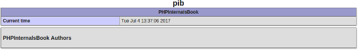

Публикация информации о расширении¶
Расширения могут публиковать информацию, запрашиваемую phpinfo() или Reflection API. Давайте разберёмся с этим
вместе.
Эта глава не будет длинной, так как здесь действительно нет никаких сложностей.
Хук MINFO()¶
Всё происходит в хуке MINFO(), который вы объявили, если вы его объявили. Если вы не объявили его, то движок
запустит функцию по умолчанию, которая выведет информацию о вашем расширении. Эта функция выведет только версию
вашего расширения и INI-настройки, которые вы в итоге объявили. Если вы хотите встроиться в
этот процесс, вы должны объявить хук MINFO() здесь в структуре вашего расширения.
Note
Всё происходит в ext/standard/info.c, вы можете прочитать этот файл. Вывод информации о расширениях PHP выполняется движком путём вызова php_info_print_module()
Вот простой пример MINFO():
#include "php/main/SAPI.h"
#include "ext/standard/info.h"
#define PIB_TXT "PHPInternalsBook Authors"
#define PIB_HTML "<h3>" PIB_TXT "</h3>"
PHP_MINFO_FUNCTION(pib)
{
time_t t;
char cur_time[32];
time(&t);
php_asctime_r(localtime(&t), cur_time);
php_info_print_table_start();
php_info_print_table_colspan_header(2, "PHPInternalsBook");
php_info_print_table_row(2, "Current time", cur_time);
php_info_print_table_end();
php_info_print_box_start(0);
if (!sapi_module.phpinfo_as_text) {
php_write(PIB_HTML, strlen(PIB_HTML));
} else {
php_write(PIB_TXT, strlen(PIB_TXT));
}
php_info_print_box_end();
}
zend_module_entry pib_module_entry = {
STANDARD_MODULE_HEADER,
"pib",
NULL, /* Function entries */
NULL, /* Module init */
NULL, /* Module shutdown */
NULL, /* Request init */
NULL, /* Request shutdown */
PHP_MINFO(pib), /* Module information */
"0.1", /* Replace with version number for your extension */
STANDARD_MODULE_PROPERTIES
};

Что вам в основном нужно сделать — это работать с API php_info_print_*(), который позволяет выводить в поток
вывода, который генерируется. Если вы хотите вывести какую-то необработанную информацию, достаточно простого
php_write(). php_write() просто записывает то, что вы передаёте в качестве аргумента, в поток вывода SAPI,
тогда как API php_info_print_*() делает то же самое, но перед этим форматирует содержимое, используя HTML-теги
table-tr-td, если ожидается, что вывод будет HTML, или простые пробелы, если нет.
Как видите, вам нужно подключить ext/standard/info.h, чтобы получить доступ к API php_info_print_*(), а также
вам понадобится php/main/SAPI.h, чтобы получить доступ к символу sapi_module. Этот символ глобальный, он
представляет текущий SAPI, используемый процессом PHP. Поле phpinfo_as_text сообщает, пишете ли вы в “веб”
SAPI, например php-fpm, или в “текстовый”, например php-cli.
Что запустит ваш хук MINFO():
Вызовы пользовательской функции
phpinfo()php -i,php-cgi -i,php-fpm -i. Более обобщённо:<SAPI_binary> -iphp --riили пользовательскийReflectionExtension::info()
Note
Обратите внимание на форматирование вывода. Проверяйте sapi_module.phpinfo_as_text, если вам нужно
переключаться между текстовым и HTML-форматированием. Вы не знаете, как информация о вашем расширении
будет вызвана из пользовательского кода.
Если вам нужно отобразить ваши INI-настройки, просто вызовите макрос DISPLAY_INI_ENTRIES() внутри вашего
MINFO(). Этот макрос раскрывается в display_ini_entries().
Замечание о Reflection API¶
Reflection активно использует вашу структуру zend_module_entry. Например, когда вы вызываете
ReflectionExtension::getVersion(), API просто читает поле version вашей структуры zend_module_entry.
Аналогично для обнаружения функций, в вашей структуре zend_module_entry есть член
const struct _zend_function_entry *functions, который используется для регистрации PHP-функций.
По сути, пользовательский Reflection API просто читает вашу структуру zend_module_entry и публикует эту
информацию. Он также может использовать ваш module_number, чтобы собрать обратно информацию, которую ваше
расширение зарегистрировало в разных местах движка. Например, ReflectionExtension::getINIentries() или
ReflectionExtension::getClasses() используют именно это.